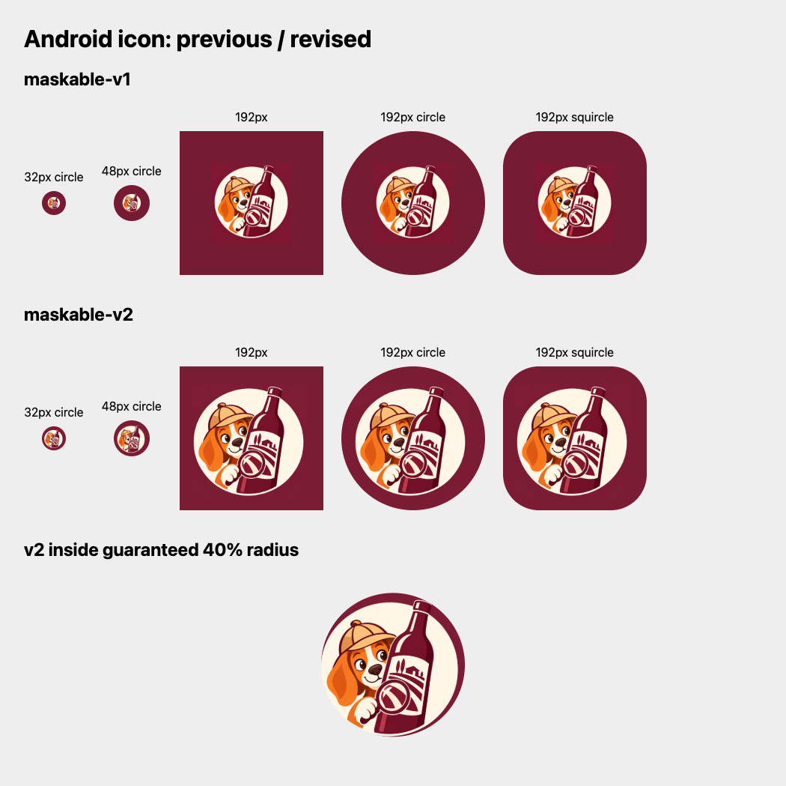

№24: размер на домашнем экране
Проверка именно платформенных PNG, а не исходной иллюстрации.
Исправление:83% вместо56%, оптический сдвиг; рисунок примерно в1,48раза крупнее.
До: весь исходник уменьшен до56%.После: увеличенный maskable-экспорт. Исходная композиция24. Обычный экспорт, без дополнительного уменьшения.
К выбору вариантов